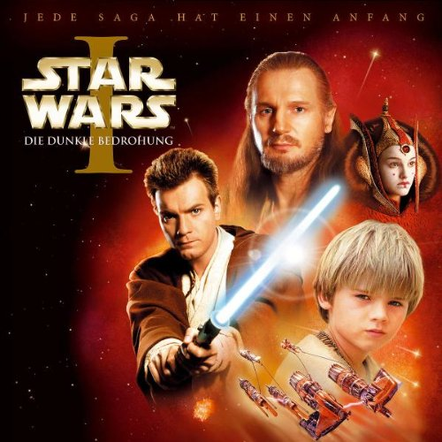

Star wars 1
In 1977, George Lucas released Star Wars, the ultimate sci-fi popcorn flick-turned-pop-culture myth machine. It quickly became the biggest money-making film of all time and changed the shape of the film industry.
After two successful sequels (1980's The Empire Strikes Back and 1983's Return of the Jedi) that extended the story of the first film, Lucas took some time off to produce movies for others, with mixed success. In 1999, Lucas
returned to the Star Wars saga with a new approach -- instead of picking up where Return of the Jedi left off, Star Wars: Episode I -- The Phantom Menace would be the first of a trilogy of stories to trace what happened in
the intergalactic saga before the first film began. Here, Obi-Wan Kenobi (Ewan McGregor) is a young apprentice Jedi knight under the tutelage of Qui-Gon Jinn (Liam Neeson); Anakin Skywalker (Jake Lloyd), who will later father
Luke Skywalker and become known as Darth Vader, is just a nine-year-old boy. When the Trade Federation cuts off all routes to the planet Naboo, Qui-Gon and Obi-Wan are assigned to settle the matter, but when they arrive on
Naboo they are brought to Amidala (Natalie Portman), the Naboo queen, by a friendly but opportunistic Gungan named Jar Jar. Qui-Gon and Obi-Wan plan to escort Amidala to a meeting of Republic leaders in Coruscant, but trouble
with their spacecraft strands them on the planet Tatooine, where Qui-Gon meets Anakin, the slave of a scrap dealer. Qui-Gon is soon convinced that the boy could be the leader the Jedis have been searching for, and he begins
bargaining for his freedom and teaching the boy the lessons of the Force. The supporting cast includes Pernilla August as Anakin's mother, Terence Stamp as Chancellor Valorum, and Samuel L. Jackson as Jedi master Mace Windu.
Jackson told a reporter before The Phantom Menace's release that the best part about doing the film was that he got to say "May the Force be with you" onscreen. ~ Mark Deming, Rovi
Star Wars 2
The second prequel to the original Star Wars trilogy takes place ten years after the events depicted in Star Wars: Episode I -- The Phantom Menace. Now 20, young Anakin Skywalker (Hayden Christensen) is an
apprentice to respected Jedi knight Obi-Wan Kenobi (Ewan McGregor). Unusually powerful in the Force, Anakin is also impatient, arrogant, and headstrong -- causing his mentor a great deal of concern. The pair are ordered to
protect Padme Amidala (Natalie Portman), the former queen of the planet Naboo, now representing her world in the Galactic Senate. Someone is trying to assassinate her on the eve of a vote
Star Wars 3
George Lucas draws the Star Wars film series to a close with this dark sci-fi adventure which sets the stage for the events of the first film and brings the saga full circle. After a fierce battle in which
Obi-Wan (Ewan McGregor) and Anakin (Hayden Christensen) join Republic forces to help free Chancellor Palpatine (Ian McDiarmid) from the evil Count Dooku (Christopher Lee) and his minions, Anakin is drawn into Palpatine's confidence.
Palpatine has designs on expanding his rule, and with this in mind he plants seeds of doubt in Anakin's mind about the strength and wisdom of the Jedis. Anakin is already in a quandary about how to reveal to others the news
of his secret marriage to Padmé Amidala (Natalie Portman) now that she is pregnant, and visions which foretell her death in childbirth weigh heavy on his mind. As Anakin finds himself used by both the Jedis and the Republic
for their own purposes -- particularly after Mace Windu (Samuel L. Jackson) expresses his distrust of the young Jedi -- he turns more and more to the Force for help, but begins to succumb to the temptations of its dark side.
Many of the Star Wars series regulars returned for Star Wars: Episode III -- Revenge of the Sith, including Frank Oz as the voice of Yoda, Anthony Daniels as C-3PO, Kenny Baker as R2-D2, and Peter Mayhew as Chewbacca. ~ Mark
Deming, Rovi
Star Wars 4
Nineteen years after the formation of the Empire, Luke Skywalker is thrust into the struggle of the Rebel Alliance when he meets Obi-Wan Kenobi, who has lived for years in seclusion on the desert planet of
Tatooine. Obi-Wan begins Luke's Jedi training as Luke joins him on a daring mission to rescue the beautiful Rebel leader Princess Leia from the clutches of the evil Empire. Although Obi-Wan sacrifices himself in a lightsaber
duel with Darth Vader, his former apprentice, Luke proves that the Force is with him by destroying the Empire's dreaded Death Star.